Practica 2.3
Introduccion
En esta practica vamos a configurar un servidor Proxy Inverso, primero clonamos la máquina de Debian donde tenemos, configurado nuestro servidor web de las prácticas anteriores, allí donde se configarará el Proxy que redigirirá cada petición que le llegue, al sevidor web configurado en la máquina original
Reconfigurar el servidor web
Primero cambiamos el nombre del archivo de configuracion del servidor web a webserver
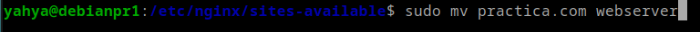
Cambiamos el puerto en el archivo de conf a 8080:
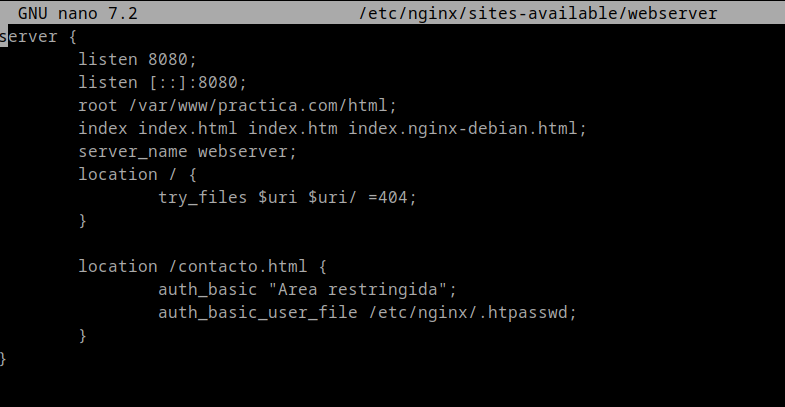
Borramos el link simbolico antiguo:
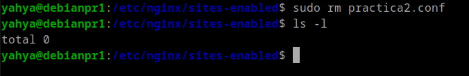
Creamos uno nuevo:
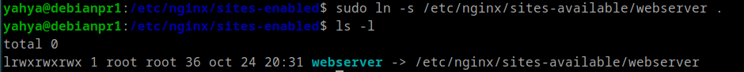
Reiniciamos nginx comprobando el sintaxis del conf antes:
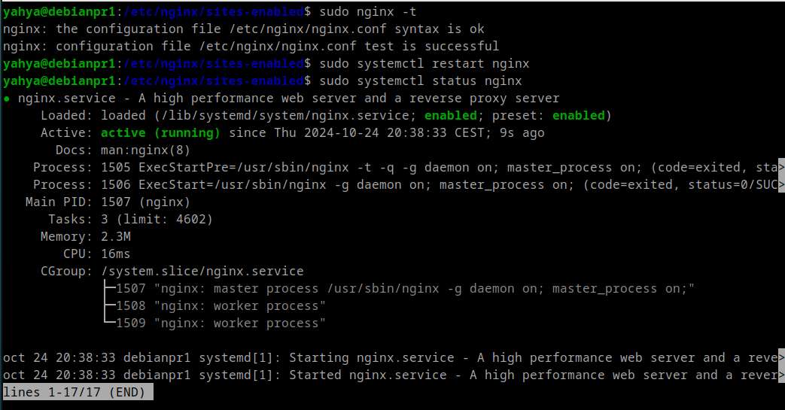
Configuramos el archivo de conf de Proxy
- El puerto: 80
- Y ponemos para que dirige la petición a nuestro servidor web
webserver
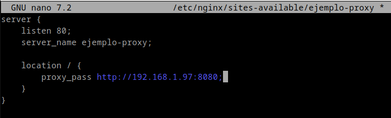
Creammos un link simbolico a site-enabled para habilitar la configuracion
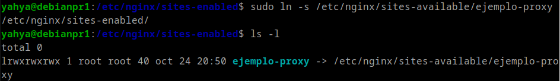
Reiniciamos nginx:
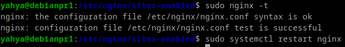
Configuramos el hosts de la máquina anfitriona poniendole la ip de la máquina del proxy y el puerto 80 por defecto
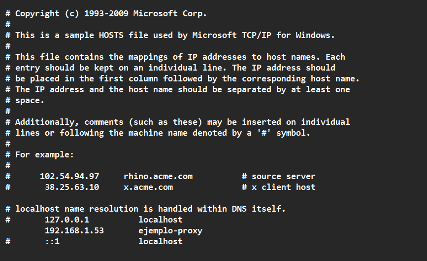
Cabezeras
- Ahora ya al acceder a nuestro servidor a través del navegador nos salen las cabezeras, y apreciamos que Remote address tiene como ip, la del Proxy, lo que significa que todo funciona como debe de funcionar.
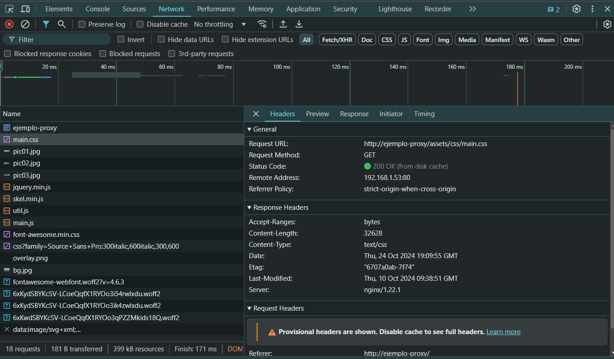
Cabecera Host en Proxy
- Vamos a ponerle una cabezera hosts a nuestro proxy que será
Proxy_inverso_yahya
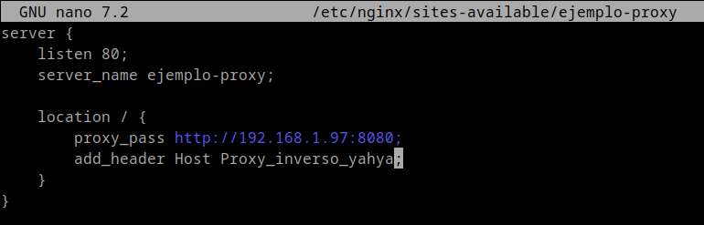
Cabezera Host en Webserver
- Hacemos lo mismo para el servidor web poniendole
webserver
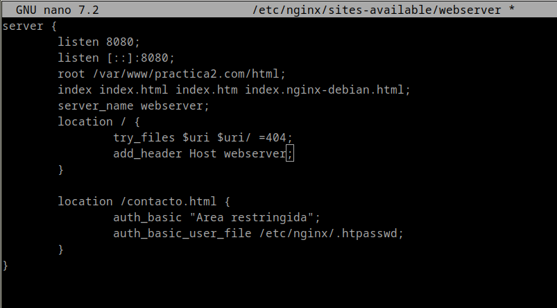
Y ahora ya se ven las cabezeras Host de los 2 servidores [Proxy, Web]
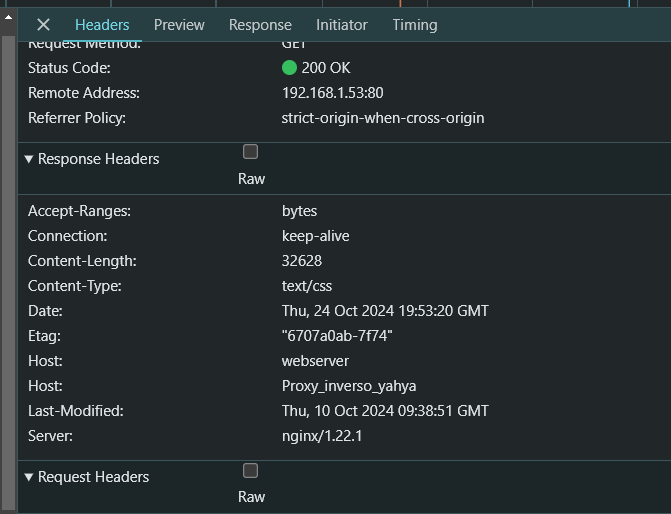